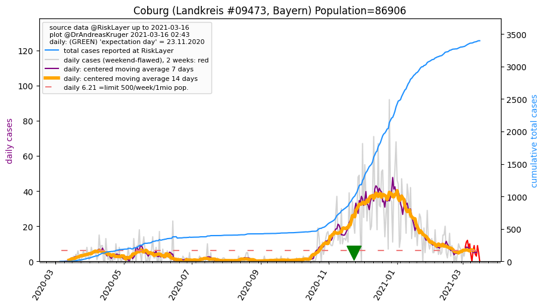
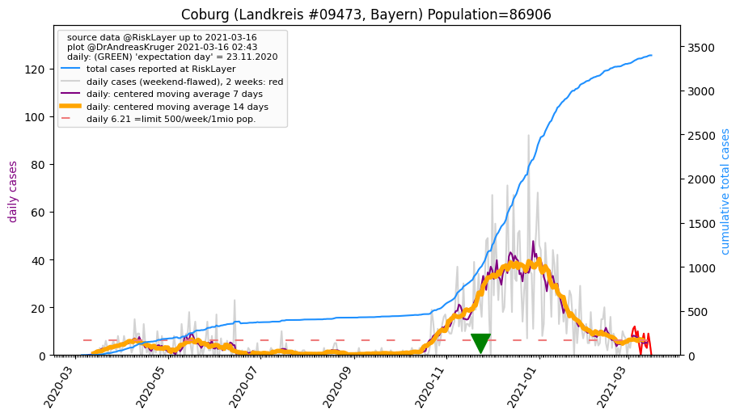

")
")
")

")
")
")
")
")
")
")
| Sonneberg_LK (0.0 km) |
Kronach_LK (19.6 km) |
Coburg_KS (20.6 km) |
| Coburg_LK (21.2 km)  |
Saalfeld-Rudolstadt_LK (27.8 km) |
Hildburghausen_LK (28.4 km) |
| Lichtenfels_LK (34.0 km) |
Ilm-Kreis_LK (37.9 km) |
Suhl_KS (38.4 km) |
| Kulmbach_LK (42.7 km) |
Saale-Orla-Kreis_LK (45.0 km) |
All plots are regenerated with new data every night. Beware this temporary hotspot is an experimental page - it might get removed, so please do not link to it. Instead link to project http://tiny.cc/cov19de.